A Venice taxi |

Taxi on the Grand Canal |

Heads down to clear a bridge. |

A typical gondola in Venice |

Street in front of our hotel. |

Street and canal in front of our hotel, Ca dei Conti. |

Some Homes and hotels near our hotel. |

Lobby of our hotel. |
|
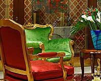
Period furniture in the lobby of the hotel. |
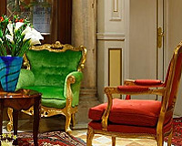
More of the lobby. |
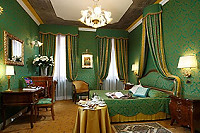
Our room in the hotel. |

Breakfast room in our hotel. |

Late in the day in front of our hotel. |

Another view of the entrance to the hotel. |

Johnnie at the entrance to our hotel. |

St. Mark' Square with tourists, bell tower, and St. Mark's Basilica. |

The bell tower in St. Mark's Square. |
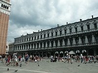
St. Mark's Square. |

St. Mark's Basilica |

St. Mark's Basilica |
|
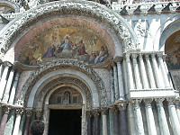
St. Mark's Basilica |

One of many beautiful interiors of St. Mark's Basilica |
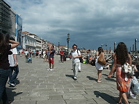
Walk along the Grand Canal near St. Mark's Square. |
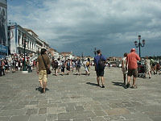
Walk along the Grand Canal near St. Mark's Square. |
|
Walk along the Grand Canal near St. Mark's Square. |

Libreria Sansoviniana (Sansovino's Library) |
Feeding pigeons. |
A typical street on the way to St. Mark's Square. |
|
St. Mark's Square filled with crowds. |
A gondola stand near St. Mark's Square. |
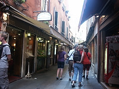
A typical street in Venice. |
A street intersection. |

One of many squares in Venice. |
Typical street paving. |
Typical interior square with a outdoor cafe. |
A restaurant. |

Johnnie a bit sleepy after a full meal. |

Obie after dinner. |

A typical canal in Venice. |

Venice canal - one of many |

A taxi stand. |

Gondolas awaiting passengers. |
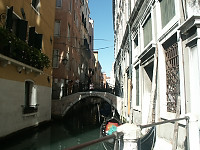
Typical canal. |
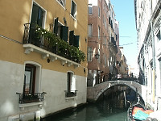
See Venice soon as it is both sinking and having water rising due to global warming. |
|
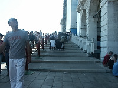
Staircase over a bridge to St. Mark's Square. |

Luckily, the city is trying to build ramps so some stairs can be avoided. |
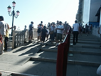
Ramp and stairs on the main bridge to St. Mark's Square from our hotel. |
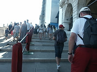
The staircase and the ramp over the bridge. |

A restaurant where we had dinner. |
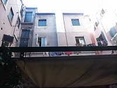
Courtyard at the restaurant. |
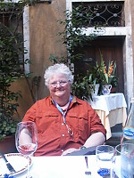
After dinner satisfaction! |

Johnnie expressing ecstasy after a wonderful clam spaghetti dinner. |
|
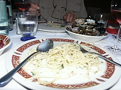
Some remaining clam spaghetti. |